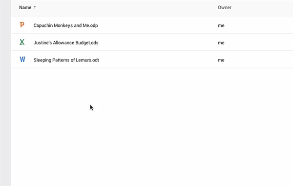

也紀念我們永遠的朋友 李士傑先生（Shih-Chieh Ilya Li）。
| ■ [技術專欄] 第一次用 PHPUnit 寫測試就上手（下） | |
| ■ [企業應用] SME Server 全功能閘道伺服器建置與管理 | |
| ■ [自由專欄] 國家地理野放開放源碼 | |
| ■ [自由專欄] 我的開源生活以及帶領我的導師 | |
| ■ [源碼新聞] 新手爸媽不用慌！雲科大「嬰語翻譯機」了解寶貝的心 | |
| ■ [源碼新聞] Google 雲端硬碟支援開放格式 | |
| ■ [源碼新聞] 2014 年最棒的開放硬體回顧 | |
| 技術專欄 | |
| 第一次用 PHPUnit 寫測試就上手（下） | |
| 作者 黃儀銘／文 | |
上篇文章：第一次用 PHPUnit 寫測試就上手（上）3. Data Providers（資料提供者）資料提供者，能提供多筆的測試資料給測試案例進行多次的測試。 使用資料提供者，能讓測試更簡潔，因為，可以將測試的 assertions 與測試資料分開寫。 |
|
| 閱讀全文 | |
| 回目錄 | |
| 企業應用 | |
| SME Server 全功能閘道伺服器建置與管理 | |
| 作者 顧武雄 | |
|
作者簡介：顧武雄，Microsoft MVP、MCITP 與 MCTS 認證專家、台灣微軟 Technet、Tech Day、Webcast、MVA 特約資深顧問講師。目前個人 Linux 著作有：「Linux 企業現場應用系統」、「Linux 私有雲社群網路現場實戰」。 引言：今日筆者所要介紹的一款 SME Server 9.0 開放原始碼閘道伺服器，是如今國內外極為少有的全功能 IT 解決方案。它非常適用在中小型的企業網路架構之中，不僅可以幫老闆節省掉不少的建置成本，又可作為內外網路間、人員間協同作業時的安全管理平台。 簡介在 IT 預算相當有限的中小型企業營運中，若是想要自行建置一部全功能的閘道伺服器，來提供內外用戶端使用者跨平台的網路連線服務，即便是聘請了 Linux 伺服器平台的專家，也得花費好一段漫長的時日，才能夠建構出一個像樣的伺服器，更別說是採用以 Windows Server 平台為主的商用伺服器建置了，需要投入的成本肯定是相當可觀的。 早在 SME Server 8.0 時，筆者就已經注意到它的存在，等了近一年多的時間，歷經了 8.1 版本，如今最期盼的 9.0 正式版本終於發行了。值得注意的是，8.0 版本是架構在 Centos 5.8 的 Linux 作業系統之上，而 8.1 則是 CentOS 5.10，至於最新的 9.0 版本則是 CentOS 6.5。 |
|
| 閱讀全文 | |
| 回目錄 | |
| 自由專欄 | |
| 國家地理野放開放源碼 | |
| 作者 謝良奇／翻譯 | |
|
本文翻譯自 opensource.com，原作者為 Robin Muilwijk：https://opensource.com/life/14/12/interview-shah-selbe-national-geographic-explorers 一群國家地理探險家起身前往非洲原野的奧卡萬戈三角洲 (Okavango Delta)，使用開放硬體、Raspberry Pi 以及開源軟體，調查水質、野生動物蹤跡等等。他們建了一個網站公開分享資料，在開放源碼的協助下，保留了非洲原野的這一片生態。 |
|
| 閱讀全文 | |
| 回目錄 | |
| 自由專欄 | |
| 我的開源生活以及帶領我的導師 | |
| 作者 謝良奇／翻譯 | |
|
本文翻譯自 opensource.com，原作者為 Rich Bowen：https://opensource.com/life/14/12/mentoring-open-source-and-everywhere-else 我投入 Apache 網路伺服器的工作幾乎已經快 20 年。我寫過 9 本和 httpd 有關的書，參與發表的會議超過 50 個以上。我是 Apache 軟體基金會 (Apache Software Foundation) 的會員，我是理事會成員也是執行副總裁。我負責 ApacheCon，包括北美與歐洲，那是 Apache 軟體基金會的官方會議。 |
|
| 閱讀全文 | |
| 回目錄 | |
| 源碼新聞 | |
| 新手爸媽不用慌！雲科大「嬰語翻譯機」了解寶貝的心 | |
| 作者 四貓／文 | |
|
每個小嬰兒都是父母的寶貝，父母都想給他們最好的照顧！但是新手爸媽常因為小嬰兒的嚎啕大哭而手忙腳亂、不知所措！是否你也遇過寶寶大哭，但是泡了牛奶卻不喝、檢查尿布也沒有濕的情況呢？為了紓解新手爸媽的焦慮，雲林科技大學開發了「嬰語翻譯機」app，幫助爸媽讀懂寶貝的心。更厲害的是，開發此 app 的團隊參加創業比賽在眾多團隊中脫穎而出，成立了「宜默瑞科技」。今天我們採訪到主持醫學影像處理實驗室，同時也是產學與智財育成營運中心研發長的張傳育教授，請他分享開發「嬰語翻譯機」app 的過程，還有帶領同學投入創業的經驗。現在先來看看「嬰語翻譯機」有什麼神奇之處吧！ |
|
| 閱讀全文 | |
| 回目錄 | |
| 源碼新聞 | |
| Google 雲端硬碟支援開放格式 | |
| 作者 四貓／編譯 | |
|

在 2014 年的最後一個月，Google 做了一個令人興奮的宣佈：那就是 Google 雲端硬碟現在已經能支援開放文件格式 (OpneDocument Format, 簡稱 ODF)了！現在 Google Drive 中，文件支援 .odt 格式、試算表支援 .ods，還有簡報支援 .odp 格式，雖然開放文件格式並不只這幾種，但在辦公室文書處理中，這應該是應用範圍最廣的三項。 |
|
| 閱讀全文 | |
| 回目錄 | |
| 源碼新聞 | |
| 2014 年最棒的開放硬體回顧 | |
| 作者 自由軟體鑄造場電子報／翻譯 | |
|
本文翻譯自 opensource.com，原作者為 Luis Ibáñez ：https://opensource.com/education/14/12/year-review-open-hardware 開放硬體是開放運動的實體基礎。透過了解、設計、製造、商業化，並採用開放的硬體，我們建立了一個運作良好且自給自足的社群基礎。而在今年，開放硬體有非常多的動態。 Opensource.com 發布了一套新的資源，包括一個可以自由閱讀的定義。今年三月，我們還玩了一個和開放硬體相關的各種主題的文章的小遊戲，持續整整一個星期。編輯人員在 “Open Hardware Day” 這一天，介紹 3D 印表機、Arduinos、quadcopters，渡過了有趣的一天。而開放軟體的新聞仍然在不同領域遍地開花。 以下就是今年的一些亮點。 |
|
| 閱讀全文 | |
| 回目錄 | |
專欄總覽


E-Mail：contact@openfoundry.org Address：台北市南港區研究院路2段128號 中央研究院資訊科學研究所 . 隱私權條款. 使用條款